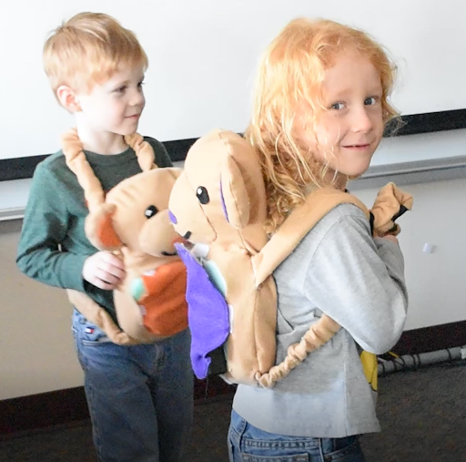
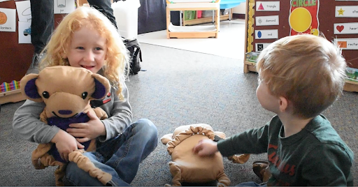

Vibrance

Vibrance is a vibrotactile device designed to enhance deaf and hard-of-hearing children’s interaction with music and dance.
Sign language requires a high level of physical expression, as does dance. A partnership between the Western Pennsylvania School for the Deaf and Pittsburgh’s Attack Theatre aimed to prepare pre-K students for learning ASL by teaching them dance first; but the kids were having trouble connecting music and dance. When the teacher would put the speaker in a trash can for amplification, the kids would gather round and touch the trash can, engrossed in the vibrations. With their hands on the can, they were unable to focus on the dance lesson.
Born out of Dr. Joseph Samosky’s Art of Making class in the fall of 2018, we were tasked with improving the focus of these students during dance class. We designed multiple prototypes in parallel, focusing on touch through vibrations: a vibrating mat, wristbands, and a wearable stuffed animal. In user testing, we discovered that the kids would simply lay on the mat, uninterested in dance, and that the wristbands were heavy and scary to the three-year-olds. The stuffed animal seemed approachable to the kids and left their hands and attention free.
My role was mainly in developing the wristbands but shifted toward the mechanical once we settled on the stuffed animal design, pushing for a kid-proof electromechanical enclosure to ensure the safety of the children as well as helping with fabrication by cutting fabrics and foam. The entire team was involved in decision-making along the way, doing many iterations of sticky-note ideation and loosely following the Stanford d.school’s design methodology.
After six weeks of development, our final product was a monkey stuffed animal that communicates via bluetooth to the teacher’s phone or laptop, passes the signal through an amplifier, and sends it to a transducer through which the children experience the vibrations.
The dance classes thus far have been a great success, and the children always want more vibrations. One WPSD teacher (Deaf) said that if she had had this as a child, she may have become a dancer.
KDKA News piece
Pitt Magazine piece
Team website